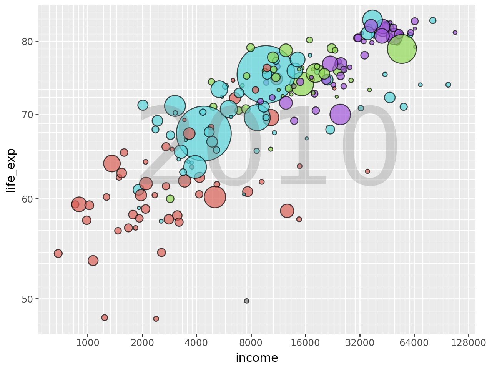
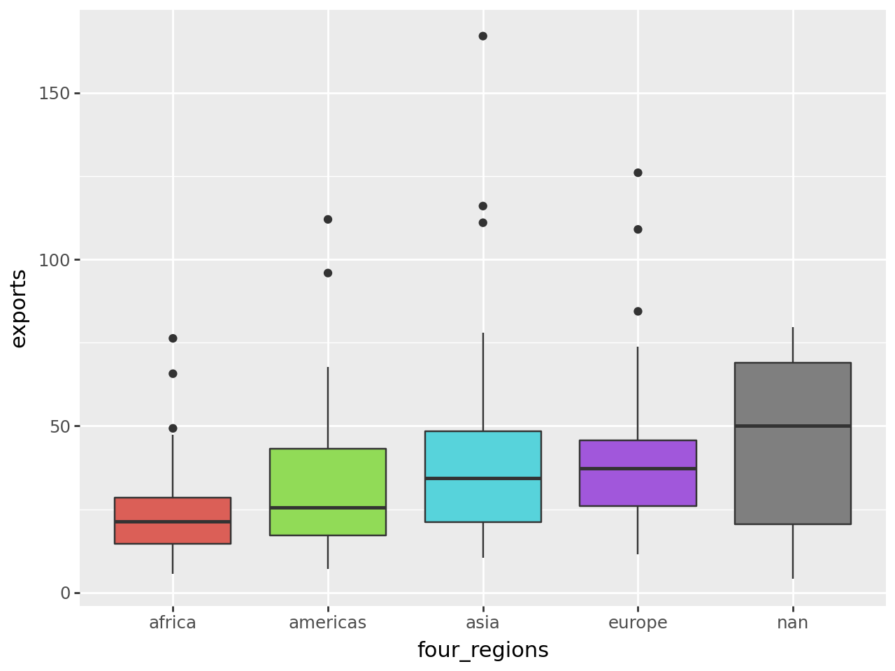
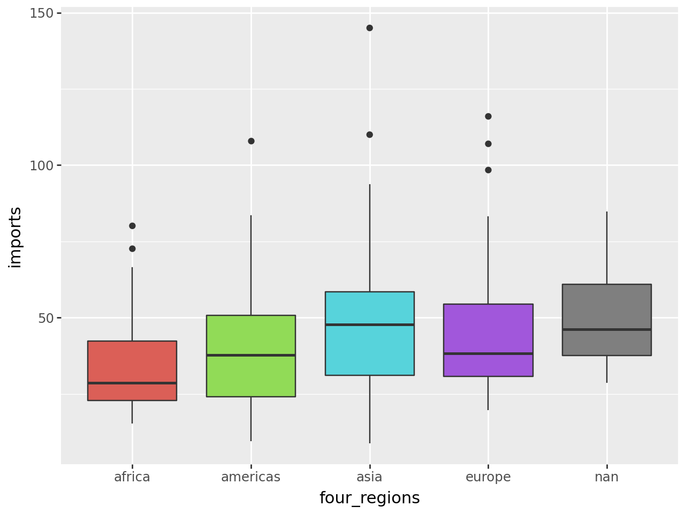

import pandas as pd
from google.colab import files
uploaded = files.upload()
df1 = pd.read_csv('q1data.csv')Saving q1data.csv to q1data.csvimport pandas as pd
from google.colab import files
uploaded = files.upload()
df1 = pd.read_csv('q1data.csv')Saving q1data.csv to q1data.csvfrom plotnine import ggplot, aes, geom_point, scale_size, scale_x_log10, scale_x_log10, scale_y_log10, annotate, guides, theme, geom_tile(ggplot(df1, aes(x = "income",
y = "life_exp",
fill = "four_regions",
size = "population"
))
+ geom_point(alpha = .7)
+ scale_size(range=(1, 30))
+ scale_x_log10(breaks=[0, 500, 1000, 2000, 4000, 8000, 16000, 32000, 64000, 128000])
+ scale_y_log10(breaks=[0, 10, 20, 30, 40, 50, 60, 70, 80, 90])
+ annotate("text", x=10000, y=65, label="2010", size=100, alpha=0.3, color="gray")
+ theme(legend_position="none")
+ guides(fill=False)
)/usr/local/lib/python3.10/dist-packages/plotnine/scales/scale_continuous.py:221: RuntimeWarning: divide by zero encountered in log10
/usr/local/lib/python3.10/dist-packages/plotnine/scales/scale_continuous.py:221: RuntimeWarning: divide by zero encountered in log10
/usr/local/lib/python3.10/dist-packages/plotnine/layer.py:364: PlotnineWarning: geom_point : Removed 4 rows containing missing values.
(ggplot(df1, aes(x = "income",
y = "life_exp",
fill = "four_regions",
size = "population"
))
+ geom_tile(alpha = .7)
+ scale_size(range=(1, 30))
+ scale_x_log10(breaks=[0, 500, 1000, 2000, 4000, 8000, 16000, 32000, 64000, 128000])
+ scale_y_continuous(breaks=[0, 10, 20, 30, 40, 50, 60, 70, 80, 90])
+ annotate("text", x=10000, y=65, label="2010", size=100, alpha=0.3, color="gray")
+ theme(legend_position="none")
+ guides(fill=False)
)/usr/local/lib/python3.10/dist-packages/plotnine/scales/scale_continuous.py:221: RuntimeWarning: divide by zero encountered in log10
/usr/local/lib/python3.10/dist-packages/plotnine/layer.py:364: PlotnineWarning: geom_tile : Removed 2 rows containing missing values.import pandas as pd
from google.colab import files
uploaded2 = files.upload()
df2 = pd.read_csv('q2data.csv')Saving q2data.csv to q2data.csv# clean the dataset
df2['energy'] = df2['energy'].replace('nan', pd.NA)
df2['exports'] = df2['exports'].replace('nan', pd.NA)
df2['imports'] = df2['imports'].replace('nan', pd.NA)
df2['energy'] = pd.to_numeric(df2['energy'], errors='coerce')
df2['exports'] = pd.to_numeric(df2['exports'], errors='coerce')
df2['imports'] = pd.to_numeric(df2['imports'], errors='coerce')
df2 = df2.dropna(subset=['energy', 'exports', 'imports'])df2['imports'] = df2['imports'].astype(float)
df2['exports'] = df2['exports'].astype(float)from plotnine import ggplot, aes, geom_point, scale_size, scale_x_continuous, scale_y_continuous, annotate, theme, guides
(ggplot(df2, aes(x='exports',
y='imports',
fill='four_regions',
size='energy'))
+ geom_point(alpha=0.7)
+ scale_size(range=(1, 20))
+ scale_x_continuous(breaks=[20, 40, 60, 80, 100, 120, 140, 160, 180, 200, 220])
+ scale_y_continuous(breaks=[50, 100, 150, 200, 250, 300, 350, 400])
+ annotate("text", x=100, y=65, label="1997", size=100, alpha=0.3, color="gray")
+ theme(legend_position="none")
+ guides(fill=False)
)

from plotnine import ggplot, aes, geom_boxplot, theme, guides
plot_box1 = (ggplot(df2, aes(x='four_regions', y='exports', fill='four_regions'))
+ geom_boxplot()
+ theme(legend_position="none")
+ guides(fill=False)
)
print(plot_box1)FutureWarning: Using print(plot) to draw and show the plot figure is deprecated and will be removed in a future version. Use plot.show().
from plotnine import ggplot, aes, geom_boxplot, theme, guides
plot_box2 = (ggplot(df2, aes(x='four_regions', y='imports', fill='four_regions'))
+ geom_boxplot()
+ theme(legend_position="none")
+ guides(fill=False)
)
print(plot_box2)FutureWarning: Using print(plot) to draw and show the plot figure is deprecated and will be removed in a future version. Use plot.show().
import pandas as pd
from google.colab import files
upoaded2 = files.upload()
df3 = pd.read_csv('q3data.csv')Saving q3data.csv to q3data.csvdf3 = df3.dropna()from plotnine import ggplot, aes, geom_point, scale_size, scale_x_continuous, scale_y_log10, annotate, theme, guides
(ggplot(df3, aes(x='internet_users',
y='gdp',
fill='four_regions',
size='income'))
+ geom_point(alpha=0.7)
+ scale_size(range=(1, 20))
+ scale_x_continuous(breaks=[1, 10, 20, 30, 40, 50, 60, 70, 80, 90])
+ scale_y_log10(breaks=[200, 500, 2000, 5000, 10000, 20000, 50000, 100000])
+ annotate("text", x=40, y=2000, label="2001", size=100, alpha=0.3, color="gray")
+ theme(legend_position="none")
+ guides(fill=False)
)from plotnine import ggplot, aes, geom_bar, scale_size, theme, guides
(ggplot(df3, aes(x='four_regions',
y='gdp',
fill='four_regions',
size='income'))
+ geom_bar(stat="identity", alpha=0.7)
+ scale_size(range=(1, 10))
+ theme(legend_position="none")
+ guides(fill=False)
)